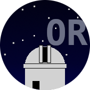
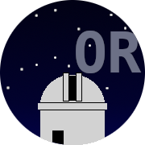

Les buts premiers de l'association (loi 1901) sont la vulgarisation de l'Astronomie et l'étude scientifique des phénomènes célestes.
Nous recevons le public le premier samedi de chaque mois à partir de 21h30: à cet effet, l'observatoire s'est doté d'un planétarium GOTO EX-3, outil pédagogique qui remporte un grand succès. Nous recevons également, avec participation financière, des groupes et classes de tous niveaux.
L'Observatoire ouvre ses portes à l'occasion de phénomènes astronomiques exceptionnels : éclipses, comètes brillantes, nuit des étoiles etc...
Mais l'on peut également choisir de venir partager sa passion pour l'astronomie en devenant membre de l'Observatoire. Pour cela, il suffit de s'acquitter d'une cotisation annuelle de 35€ (tarif plein) ou 17,5€ (tarif réduit pour les scolaires et les étudiants). L'adhésion donne accès aux séances d'observation à Rouen et à la campagne, à la bibliothèque, à la réception du bulletin et aux différentes activités tous les samedis soir à partir de 21h30.